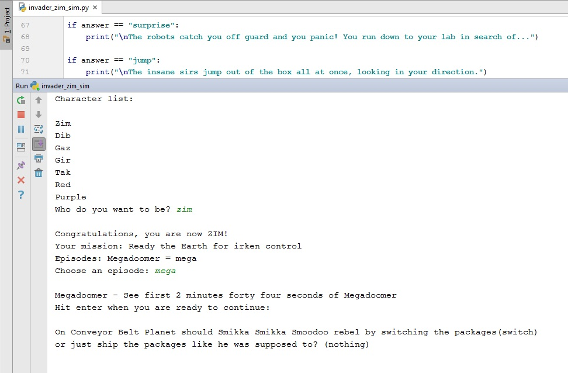
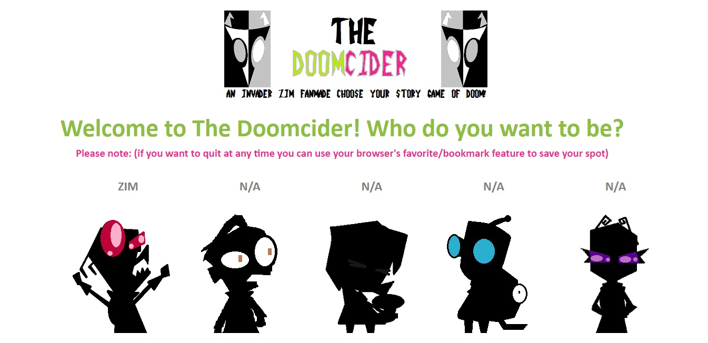
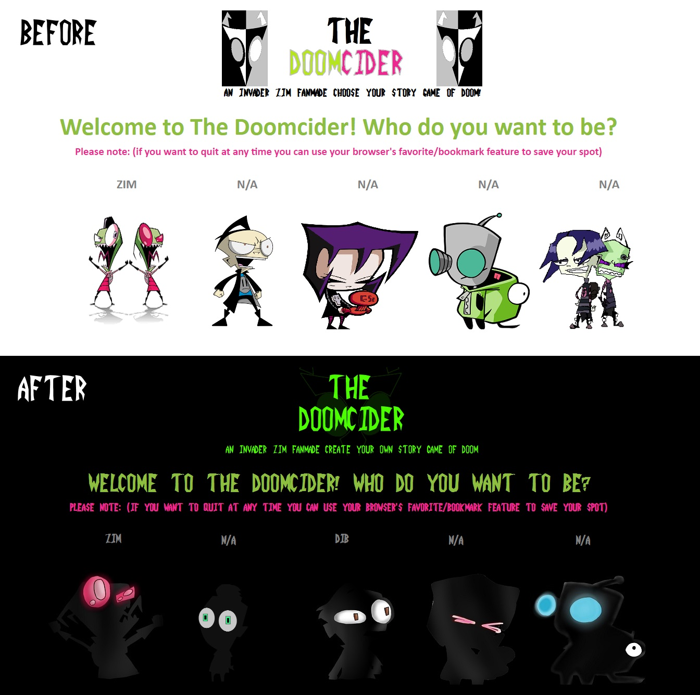

Just after I got into Invader Zim I started discovering some of the different fan projects linked to it. I liked that fans were make these contributions to the show. I wanted to contribute to the fandom as well with my own project but didn’t have any ideas.
I had just started taking Python as part of my Information Technology course. The instructor was lecturing about if statements, he compared them to a choose your own adventure game. Eventually I started on Python based proto-type called invader_zim _sim. It featured a mock character list, and an incomplete version of Megadoomer. Unfortunately, it took forever to program and compatibility was a major issue.
I created a trailer for my proto-type and came up with a name. I called it The DoomCider, a play on doom and decider. After publishing the trailer, I was surprised that people were excited to play it.
I hated web development at the time. I only switch to it for compatability reasons. The transition dramatically simplified, sped up development and made my want to a web developer. Inspite of this Megadoomer was still taking forever to complete and I began growing impatient with my miniscule progress. After about a month of development, I finally got to an ending. In ended creating two others and turn the incomplete page maze into a demo.
Prior to releasing the demo, I recalled a video I had watched about a month prior to starting this project. It was published by Shining Cecil and involved him reading the Pokemon hand book in Zim’s voice. It stuck in my memory and sparked the idea of character narrators.
When I first started developing the HTML version of the game, I googled stock images. I had to of course change them before I released the demo. At the time I had very limited art skills so I created some basic silhouettes in paint. Shortly after I changed the icons, Peter Fields offered to improve them. His designs are what is featured in the current selection menu, although I did do the Keef's icon/animation.
